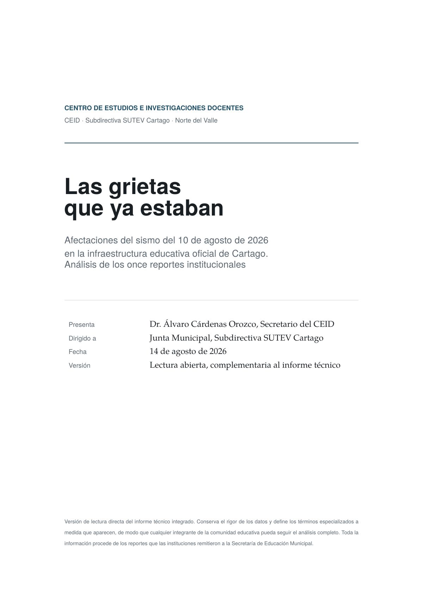

«Las grietas que ya estaban»: datos del sismo del 10 de agosto en las instituciones oficiales de Cartago
Análisis estadístico de la información de la Secretaría de Educación Municipal sobre las afectaciones en 11 de las 12 instituciones oficiales y 38 sedes.

Después del sismo del 10 de agosto, el CEID analizó la información que suministró la Secretaría de Educación Municipal sobre las afectaciones en la infraestructura educativa de Cartago. El análisis cubre 11 de las 12 instituciones oficiales y 38 sedes.
Qué contiene
Los datos se presentan agrupados, por institución y por sede, en dos documentos: el informe integrado de afectaciones a la infraestructura educativa y el reporte abierto «Las grietas que ya estaban», del 14 de agosto.
Por qué lo hace el CEID
El artículo 52 del Estatuto del SUTEV le pide al CEID ampliar la defensa de la educación pública mediante campañas, foros y debates en los que se desarrollen propuestas (literal d). Este reporte es la base de esa discusión.